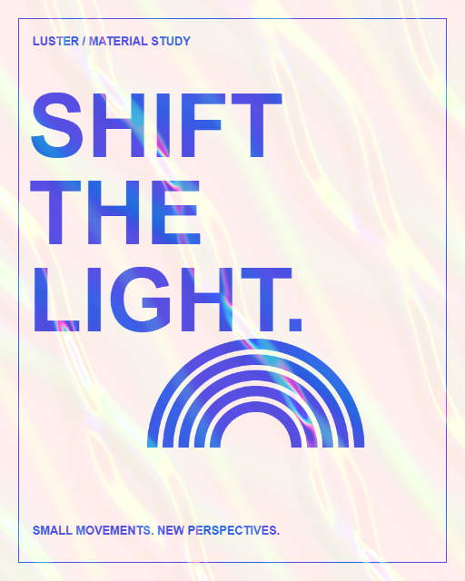

Trial
Free. Ready in your browser.
- Your own artwork or two examples
- Four templates and six finishes per set
- Angle, original view and foil toggle
- PNG up to 512 px · no watermark
- Saved looks on this device
Explore foil, grain and folded surfaces on your own artwork. Move the light, find a finish, and take a PNG back to your design.
Free to try · no account · artwork processed on your device

Upload a PNG, JPEG or WebP. Or start with one of our examples.
Choose a template, explore six finishes, then drag the artwork or move the angle slider.
Download your current view as a PNG, up to 512 px on its longest edge. No watermark.
Two original examples to explore before you upload your own work.
Free. Ready in your browser.
Keep the recipe. Use the material.
Pro is not available to purchase yet. Pricing and access will be announced here.
Artwork processing and saved looks stay in this browser. Downloaded PNGs and handoff files are saved to your device. Clearing browser data removes locally saved looks.
This site is hosted on GitHub Pages, which records visitor IP addresses for security. See GitHub privacy statement.
Use artwork you own or have permission to use. Trial PNGs are free to use in your projects; this does not grant rights to someone else's artwork or permission to redistribute Luster's code and shaders.
PNG, JPEG and WebP · up to 20 MB and 24 megapixels. Previews are scaled to 1024 px; Trial downloads are capped at 512 px. A browser with WebGL is required. Desktop is recommended for editing.
This public trial is experimental. The foil response is an art-directed effect. Your device's speed and rendering may vary.